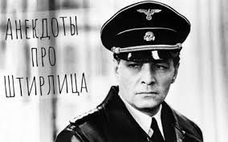
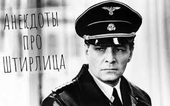
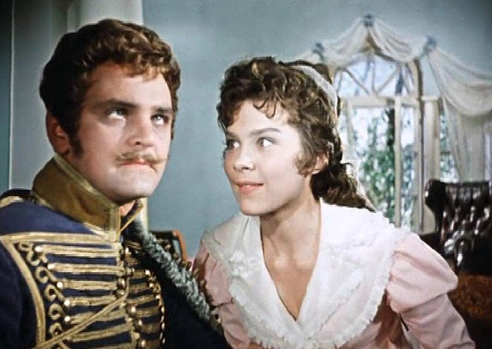
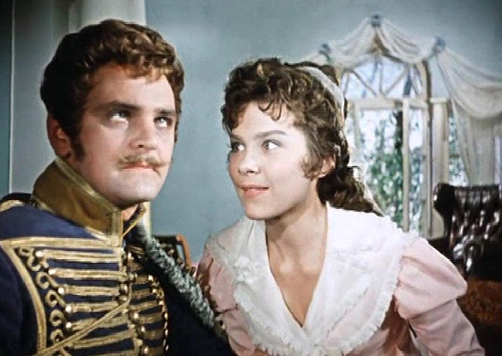

– Бабушка! Сколько километров до соседнего села? – Пять было. А потом приехали специалисты, перемеряли и намеряли семь. Теперь ходим лишних два километра.
82-летний старик приходит к доктору: – Я на следующей неделе опять женюсь, доктор! – О, это неплохо! И сколько лет невесте? – 18. – Я должен вас предупредить, что чрезмерная активность в постели может иметь смертельный исход! – Пусть умирает, еще раз женюсь!
В ресторане. Официант: – Месье, что будете кушать. Клиент: – Я бы хотел то, что ест вон тот мужчина у окна! – Это невозможно, он не отдаст.
– Алло, полиция? – Да, что у вас случилось? – Две девушки дерутся друг с дружкой за меня. – Молодой человек, а в чем, собственно, проблема? – Страшненькая побеждает!
Сколько евреев нужно чтоб поменять лампочку? Смотря на что.
 

 
